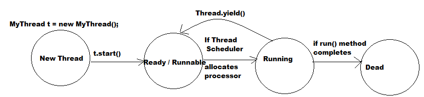
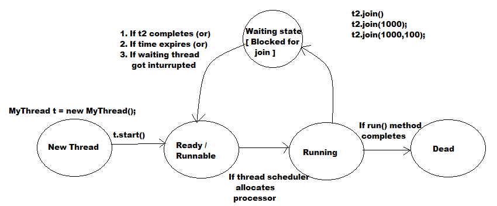
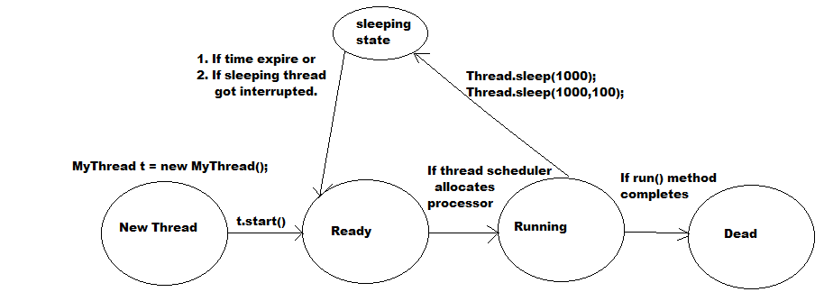

Thread Prevent:
The method to prevent Thread Execution :
- We can prevent a Thread execution by using the following 3 methods :
yield():
- yield() method causes to pause current execution of thread to give the chance to remaining waiting threads of same priority .
- If there is no waiting thread or all waiting threads having low priority then the same thread will continue its execution .
- If several waiting threads having the same priority then we can not expect which thread will get chance and it depends on the Thread Scheduler .
- public static native void yield() ;

- Note : In the above example the chance of completing main thread first is high because child thread always calling yield() method .
- Note: But some Operating System not provide proper support for yield() method
join():
- If a thread wants wait until completing some other threads then we should go for join() method .
- For Example: If a thread t1 wants to wait until completing thread t2 then t1 thread has to call t2.join() then immediately t1 thread will be entered into waiting state .
- public final void join() throws InterruptedException
- public final void join(long ms) throws InterruptedException
- public final void join(long ms,int ns) throws InterruptedException

- In this case main thread has to wait until completing of child thread .
- Note: Every join() method throws InterruptedException which is checked Exception and hence whenever we are using join() bmethod compulsory we should handle
InterruptedException either by try-catch or throws keyword .
- If main thread calls join() method on child thread object and child thread calls join() method on main thread then both threads will wait for each other .
So the program will be hanged like Dead lock situation .
- If a thread calls join() method on the same thread object then the program will be hanged like Dead lock .
Example : Thread.currentThread().join();
sleep():
- If a thread don't want to perform any operation for a particular period of time then we should go for sleep() method .
- public static native void sleep(long ms) throws InterruptedException

How a Thread can interrupted another thread :
- A thread can interrupted sleeping and waiting thread by using interrupt() method of Thread class .
public void interrupt();
- In the above program, main thread interrupts child thread then the output is :
o/p: End of main THread
I am Lazy Thread
I got interrupted
- Note: Whenever we are calling interrupt() method we may not see impact immediately, If the target thread is in sleeping or waiting state then immediately the thread will interrupted .
- If the target thread not in sleeping or waiting state then interrupt call will wait until target thread entered into sleeping or waiting .
- Once target thread entered into sleeping or waiting state then immediately it will interrupted .
- There is only one situation where interrupt call will be wasted i.e if the target thread never entered into sleeping or waiting state in its life time .
- In the above program, interrupt call waited until executing for loop 100 times .